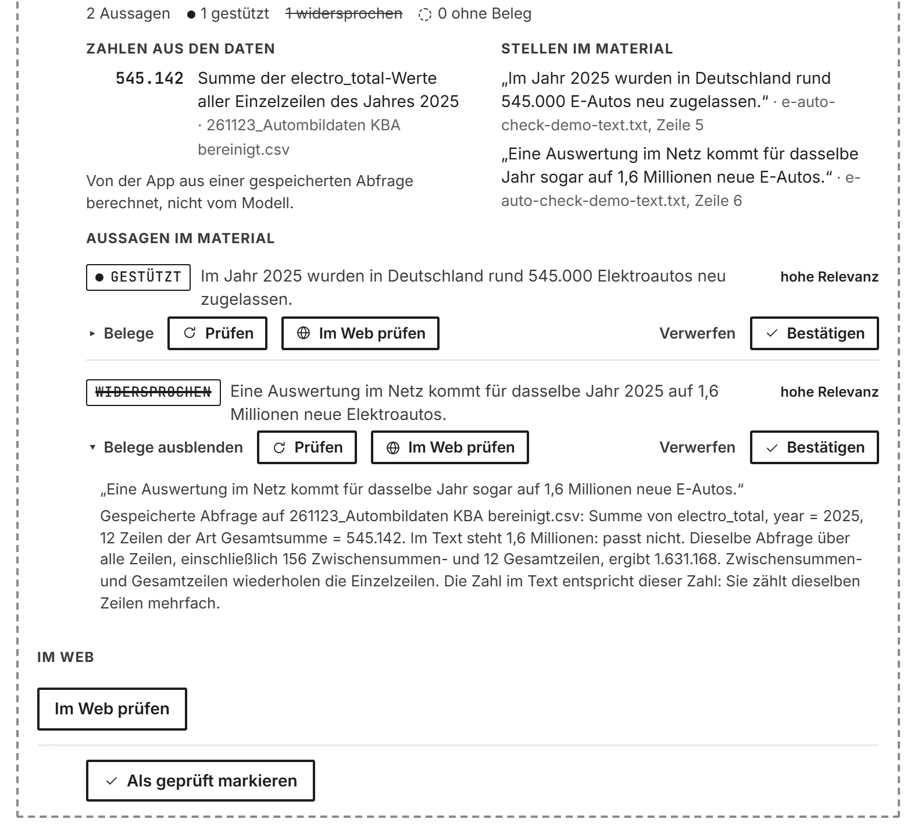

46 hours in Munich: from concept to prototype
At the AI for Media Hackathon 2026, Open Journalist went from a stack of design documents to an application that checks a claim against 60,000 rows of data, drafts a radio piece and refuses to export until a person has signed off.
Monday, 23 November, 14:00, the Innovation Center Munich of T-Systems. Sixty people from newsrooms, product teams, development, design, data and research sit down for three days under one title: Media Data Hack: turning editorial data into AI experiences. The AI for Media Hackathon 2026 is a joint event of the AI for Media Network, T-Systems and pub.tech, with partners from Bayerischer Rundfunk, Süddeutsche Zeitung and SWR X-Lab in the programme and on the jury.
We came with a question that had been bothering us for a while: AI has made it cheap to turn recordings and documents into text, summaries and candidate facts. Why has it not made it any cheaper to check them?
The hackathon in brief
The format asked teams to build AI-supported prototypes on journalistic data, either internal tools for newsrooms or new offerings for audiences. Participation was free and selective: ideas were submitted by 1 October, refined in an online pitch round on 8 October, where similar ideas were merged and teams formed, and the final list of participants followed at the end of October.
- Opening, technical introduction by T-Systems, final team building
- Hacking starts
- Hacking from 9:00 “till late”
- End of hacking
- Result presentations, then the jury session and the awards
Language models, transcription and embeddings were available through T-Systems' AI marketplace, and data sets were connected to the models through MCP servers. The jury scored five categories with up to five points each: innovation and creativity, technical implementation, usability and design, potential and scalability, and presentation and documentation. Teams had four minutes for presentation and demo, then two minutes of questions.
What we brought: a concept, written down
Open Journalist did not start in Munich. The idea and the first product concept come from Robin Greene, who had been part of the working group “Unit of News” at the AI for Media Network's symposium in Tutzing in 2024. The group concluded that journalistic information is best stored as a knowledge graph with events as its nodes. Open Journalist takes that idea into research: a story graph in which every event and every claim keeps its thread back to the evidence.
Before the hackathon, the repository held the product concept, an editorial workflow with seven phases and eighteen quality gates, an architecture with its decision records, and a short list of rules that code must never break. The most important one: agents propose, people decide.
What we built
By Wednesday noon, Open Journalist was a desktop application for Windows and macOS, built on a lean Python core with a web interface. It runs on your own computer and talks to any OpenAI-compatible model; during the hackathon, that was the team model on T-Systems' LLM Hub. A project moves through five steps:
- Start. “Give me what you have.” One field for files, links, text or speech.
- Explore. You set how confidential each file is. Tables are analyzed locally, and the model proposes theses.
- Check. Claims are pinned to their line in the text and checked against stored queries on the data.
- Build. Drafts in several formats, every sentence with its evidence.
- Release. Nothing is exported until the required gates are decided by a person.

The demo: 545,142 or 1.6 million?
For the stage we needed a case that anyone in the room would understand in seconds. We wrote a short synthetic text, marked as such, with three claims about new registrations of electric cars in Germany, and put it next to a cleaned table of new registrations from 2013 to October 2026, about 60,000 rows.
The text claims around 545,000 new electric cars in 2025, and that an analysis on the web counts 1.6 million. Open Journalist's local table analysis spots the problem before any model is involved: the file mixes single rows with subtotals and grand totals. A stored query over the grand-total rows gives 545,142, which supports the first claim. The same query over every row gives 1,631,168, which is exactly how you get to “1.6 million”: by counting the same cars several times. The third claim, about public charging points, has no material behind it. It stays a gap, and no model is allowed to fill it.
From the confirmed claims, the Story Builder drafted a web article and a radio two-way. Before the export unlocked, two gates had to be decided: G03, the source and evidence check, and G14, sign-off and release.
How we worked: people and agents
Six people built Open Journalist, and none of them worked alone. Each worked with coding agents, in parallel sessions, on small pull requests. A team board, itself a Claude artifact with its own database, showed progress, plans, decisions and the chat with the coordinating agent, which we called Marvin.
Much of the planning happened out loud. Conversations at the table were recorded, transcribed, and turned into build plans and work orders for the agents, each with its sources and a check by a second agent with fresh context. Fourteen transcripts went into the plans. Feedback from outside the team came in through a QR code, spoken or typed, and accepted items became issues in the repository.
The test rounds were humbling, which is what test rounds are for. The first one, on Tuesday morning, found that the check timed out after 60 seconds, that the interface hung while it waited for the model, and that a CSV file showed up as a block of text. All three were fixed the same day. A measurement against the team endpoint later that morning took 475 seconds for the full check of the demo case and got all three expected findings right, plus some filler claims from headings, which led to the next fix.
What we learned
Start where the material is
Our first version opened with a form. The feedback was blunt: too academic, too cluttered. So the start became a conversation: drop in what you have, say what you are after, and Open Journalist answers with what it sees. Its position became clear in the process: Open Journalist starts when there is material, not at the idea.
Direction first, claims second
Pulling every claim out of every document produces thousands of statements that a reporter under deadline will never read. The better order is to analyze the material, propose a direction, and only then extract the claims that matter for it, atomic, one fact each.
Numbers belong to the data, not to the model
The model may write a query, but the app checks that it only reads, runs it locally, and shows query and result. A figure the model writes on its own is marked as unchecked. That one rule is what makes the demo case work.
Formats are editorial knowledge
A web article, a radio two-way, a TV piece and a long-form feature differ in tone, structure and length, not in their facts. So formats became plain Markdown templates that a newsroom can edit without writing code. Our bet: the moment an editor sees their own channel in the format list, and thinks “I know that one”, is when the idea clicks.
What comes next
The prototype is a start, not a product. The roadmap leads to a tool for freelance journalists in the first half of 2027, to teams and whole newsrooms in the second half, and to a Trusted Content Pool across organizations in 2028, in which newsrooms share signed attestations of verified units, never the material behind them.
Open Journalist is developed in the open under the European Union Public Licence. The most valuable contribution right now comes from newsroom practice: tell us what in the workflow, the gates or the formats does not match how your newsroom works.
This article was written on the day of the result presentations, before the jury had decided. Thanks to the organizers and partners of the AI for Media Hackathon 2026 for three intense days, and to everyone who tested, argued and sent feedback.